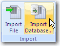
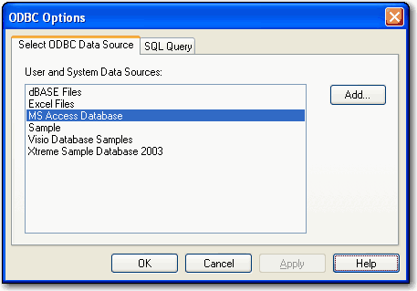
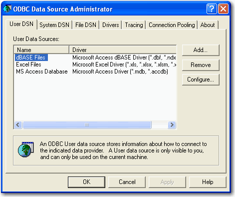
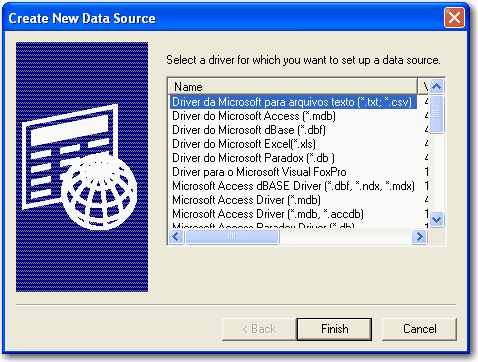
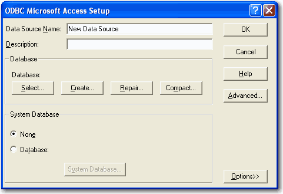
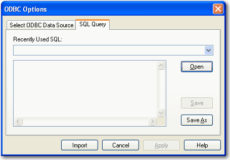

You can import ODBC compliant databases into SigmaPlot. To import a database,
first define an ODBC Data Source. After defining the data source, you can
then either import tables or import using SQL (structured query
language).
Note: For more information on SQL, see the many sources and
tutorials available on the Internet.
To define the ODBC data source:
On the Worksheet tab, in the
Import group, click
Import Database.

In the ODBC Options dialog box,
click the Select ODBC Data Source tab. The
User and System Data Sources list contains
all defined the ODBC data sources.

To add a data source that is not on the
list, click Add.
In the ODBC Data Source
Administrator dialog box, click the User
DSN tab.

Select a name from the User Data
Sources list.
Click Add.
In the Create New Data Source
dialog box, select a driver for which you want to set up a data source from the
Name list.

Click Finish.
In ODBC Setup dialog box (this is
specific to the driver you selected for the data source), enter a name to
identify the new data source in the Data Source
Name box.

Under Database, click
Select.
In the Select Database dialog box,
select the database, and click OK.
Click OK again to close the
ODBC Setup dialog box.
Click OK in the
ODBC Data Source Administrator dialog
box.
Click OK in the
ODBC Options dialog box.
If the data source already appears in the
User and System Sources drop down-list, select it. The
Import Table dialog box appears.
In the Import Table dialog box,
select a table from the Select Table/Query
drop-down list.
Select fields in the table by moving fields from
Unselected fields to
Selected fields by double-clicking a
selection in the list. You can also click
<< and
>> to move all the selections, or
< and
> to move them individually.
Click Import to import the fields
into the worksheet. Field names in the database become column headings in the
worksheet. All records in the table are imported.
To import using SQL, on the
ODBC Options dialog box click the SQL
Query tab.

Under Recently Used SQL, type the
name of the path where the SQL is stored, or select a recently used SQL
(Structured Query) from the drop-down list.
Click Open to open an .spq
file.
Click Import to run the query and
import the data.
If the SQL is valid, SigmaPlot imports that data
into the worksheet based on the SQL statement. Field names in the database
become column headings in the worksheet. Only the records defined by the SQL
(rows) are imported.
If the SQL is invalid, you are prompted to correct the
SQL.